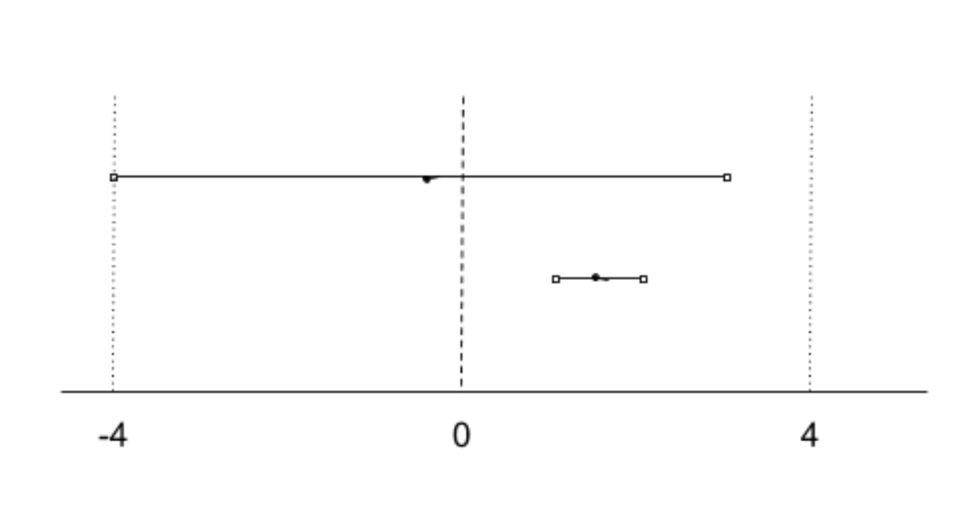
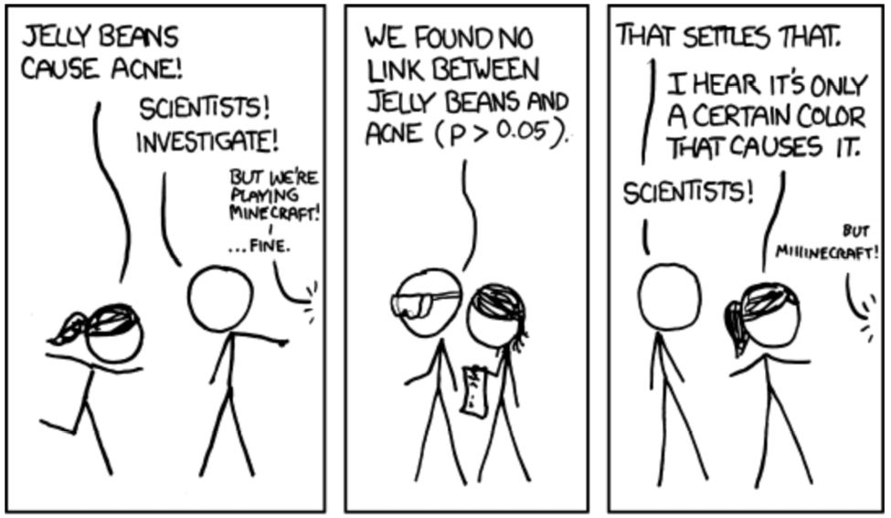
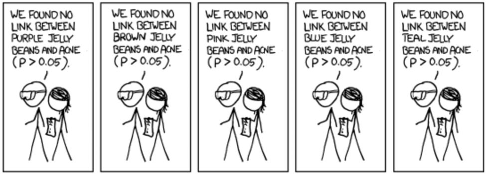
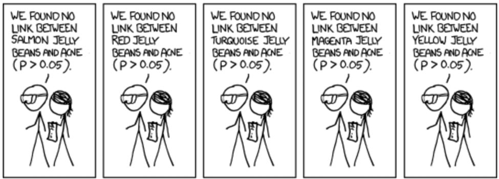
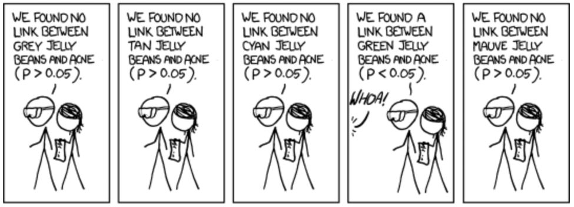
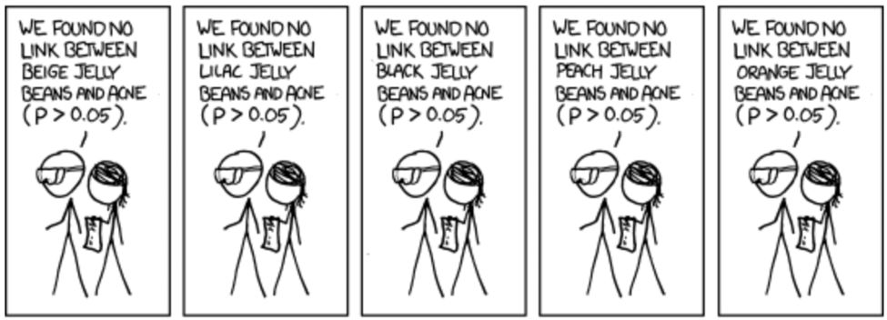
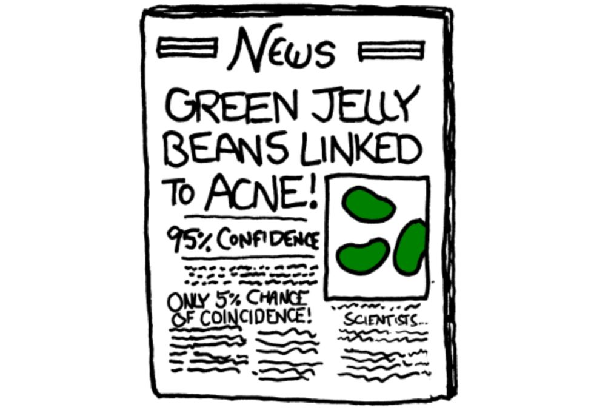

Chapter 5
Undoubtedly, conversations with users are incredibly valuable. They offer a depth of insight into their experiences and motivations; not just what they do, but why .
There's a catch, though—in fact, many catches.
Qualitative (descriptive) data from user research only samples from a few people. Usually, those people are only a rough approximation of your true user base: they speak your language, live near you, and have free time in the middle of the day to participate in research. There's often a huge gap between what people say they will do or how they behave when they're being watched, and what they actually do.
This is where quantitative (numerical) data comes into play. As a PM, you need to use quantitative data and metrics to learn what people actually do, identify new opportunities, and measure success.
Learn your company's key success metrics
What does success mean to you? That's an interesting question for an individual—but it's also an interesting question for a company. And, as it turns out, companies (and teams) might define it in somewhat different ways.
When you're new to a team—whether junior or senior—you need to learn the relevant metrics. How does your company measure success? What about your product? What does good usage look like?
Ideally, your company has prioritized those metrics so you know which are the most strategically important. For some companies, the most important thing is user growth. For others, it's retention, revenue, time spent on the site, or winning customers in key industries.
Your company should have a dashboard that can show you the metrics over time. If it doesn't, please work with your team to create one! It's awfully hard to optimize metrics if you can't easily understand what they are. (See "Create a dashboard for your team" in Chapter 5 )
Consider what product work has moved those metrics. If you're new, it can be useful to discuss this with your team. What past changes have driven these metrics, positively or negatively? If answering this question is challenging, that can be a red flag that the team hasn't been paying much attention to metrics.
Think also about how your team's work and metrics connect to the company's metrics, and make sure your team understands that connection. For example, if you're working on the spam detection tool of an email system, your team might be optimizing around false negatives and positives, while the larger product is optimizing around user retention. What is the relationship between these? Will improving one improve the other?
Learn how to pull data for yourself
Speed of cycles is critical in data analysis. You need to have a hypothesis, test it, form a new hypothesis, then test that one as well, and keep iterating. If you need to wait for someone else to send you the data, it can take the process from 15 minutes to several days. That is why it's so important to learn how to pull your own data..
How you do this will depend on the company. Some companies have customizable dashboards, and each PM can create their own. That's great! But at other companies, you'll just use SQL. That's okay too.
In fact, even if you have access to a customizable dashboard, you might still find SQL very handy. It gives you more granular control in data analysis, and ultimately saves you a lot of time. Don't be intimidated if you have no technical background either; spend a day or two learning it, and you can learn the rest as you go.
Create a dashboard for your team
Every product should have a dashboard, accessible to PMs and non-PMs. If you're designing this from scratch, or just revising it, here are some important things to keep in mind:
Review your team's metrics regularly
Your product's metrics should be reviewed on a regular basis. This helps you quickly identify any surprises in the metrics and promptly fix any issues. Some of the key questions to ask are:
Have the graphs for any metrics increased or decreased relative to their prior trend? If so, investigate to find out what caused the change.
Can you see the impact of any recent product or marketing changes in the metrics?
Have any metrics crossed a threshold that's worth celebrating? 1
Are there any interesting long-term trends? Pay special attention to metrics that support or refute the product strategy.
Some teams find it helpful to set up a rotation system for reviewing the metrics. Each week, designate someone to review the metrics and follow up on any surprising changes. This ensures that people across your team are familiar with the metrics, and that the review actually gets done.
In the same way that you might run exploratory user research to discover new insights, you can explore the data your product gathers to discover new opportunities. Data can often be used in creative ways—but to do this, you need to understand what data is out there. Here's an example.
Once, at Google, my team wanted to use the user's IP address to relevant local results for searches like "pizza restaurants." My hunch was that this IP address location was accurate enough. But how could I prove it? We were reluctant to run an experiment immediately, since it wouldn't really tell us how predictive IP addresses were of a user's location. A lot of "bad location" guesses could be jarring to users.
Get curious and explore the different types of data available at your company. This might be the Google Analytics dashboards, raw user logs, NPS reports, search logs—anything you have access to. Start with any questions you can think of, whether they're directly related to your projects or just something you're curious about. Look for anything surprising, and then try to dig in to find out what it means or what caused it. If you find interesting insights, make sure to share them with other people.
Shape your company's key success metrics ⚡⚡
Metrics aren't set in stone. As you advance in your career, you may need to help the whole company focus on the metrics that matter the most. If it looks like people are chasing the wrong metrics or confused about which should be the top priority, it's a sign that you can step up to help.
To shape the company's success metrics, you want to lead a cross-functional, collaborative process; it's important to get broad buy-in. Identify all the problems you see with the current success metrics, and invite people in roles across the company to share any problems they see, or any worries they have, with changing the metrics.
The frameworks at the end of this chapter provide some guidelines on how to choose good metrics.
See also: "Good metrics versus vanity metrics" in Chapter 5 , "Pirate Metrics" in Chapter 5
At some companies, the most senior PMs become responsible for their business unit's profits and losses (P&L). This means they have an extra layer of accountability that includes not only the product team, but the business teams such as sales and marketing as well. They're responsible not just for shipping excellent products, but also for ensuring that those products bring in enough revenue without generating too much cost.
When you have P&L responsibility, you'll work with someone from finance on a team budget. The budget covers the plans and targets for the year, usually on a quarterly or monthly basis. It will include costs such as how many people you're expecting to hire in each role, and how much you'll spend on advertising or other expenses. It also includes revenue that you'll forecast based on past revenue, seasonality, sales headcount, marketing, and product launches. 2
It might seem impossible to get the forecast right, but luckily you don't have to. Ely Lerner, who ran a P&L at Yelp, shared his perspective:
You probably never are going to forecast correctly, so the tip is to always be a step ahead of realizing when the plan is wrong. That gives you more time to correct it, and more time to communicate it. You'll want to have a conservative financial plan you share with Wall Street and a more aggressive internal target you rally your teams to try to stretch and go hit.
When you come up with your budget, especially at a public company, you'll need a narrative about why you're investing the way you are. For example, your strategy might be to maximize profit, or it could be to spend more in order to grow your market share. Either approach could work, but you'll need to convince investors that you're making the right choice.
Forecasting is important because the plans you set and your ability to hit them can directly impact the stock price, which in turn affects compensation and can even increase the risk of the activist investors taking control of the company. 3
Each month or week, you'll report on the forecasts and analyze the drivers. If revenue is down or costs are up, you'll want to dig in to make sure you understand exactly why. Over time, you'll build up dashboards and models that help you quickly hone in on what part of the funnel is falling behind.
Driver analysis might seem like a lot of work, but as Sachin Rekhi, who ran a P&L at LinkedIn, shared, it can really improve your product intuition and make you a better PM:
Now when you create initiatives, you're thinking about which driver the initiative is going to boost, and by how much. Of course, you are never accurate, but at the end of the quarter you would look at what you actually did and build your intuition for what features and changes in the product actually had some meaningful metric output.
If things aren't on track, you'll then work with teams to see what levers you can pull to get things back on track. You might shift budget from long-term bets to short-term drivers like advertising. You might have engineers build tooling that makes sales people more productive.
Use benchmarks to make sense of data
Early in my career, the expectation that PMs would have memorized a variety of metrics about their product scared me. I couldn't understand why I would need to be able to recite information like how many users our product had, or what the growth rate was from memory. It reminded me of struggling to memorize important dates in history class. Sometimes it made me wonder if I was really cut out to be a PM.
My breakthrough was learning to use benchmarks to add context and make data meaningful. Benchmarks are points of reference, either industry standards or internal references based on past launches.
For example, venture capital firms have revenue and growth benchmarks in place that they use to determine if a product is doing well. These can be helpful for self-assessing how your product is doing.
While you're reviewing the data, find a reference point so you will know how to interpret the numbers you're looking at.
Over time, you'll get better at spotting signals in noisy data. While it might look like magic, spotting signals is simply based upon recognizing patterns you've encountered in the past.
You can speed up the process of building up your intuition by observing other people analyzing data and identifying patterns. Sit in on experiment analysis meetings, or read past experiment write-ups. Try to turn the numbers and facts into a story that makes sense.
Experiments can be useful, but that doesn't mean you should test every idea or solve every argument with an experiment. It's okay—even good—if some experiments fail. But experiments take time, and if too many are failing, you probably aren't using your team's time wisely.
Nundu Janakiram, Director of Product in Rider Experience at Uber, shared the importance of improving the success rate of your experiments:
Good product managers learn from failure...but great product managers also fail less.
Insightful user research allows you to be right more often. When you have a deep understanding of your customers' relationship to your product, you'll be able to run experiments more efficiently.
Experiments can have a lot of hidden costs, and over-experimentation can stall decision-making and drag down your forward momentum. Avoid trying to resolve every internal debate with "Why don't we just test it?"
Focus your experimentation energy on answering the most important questions that would allow you to move confidently forward in the product development process. Great PMs fail less because they are efficient with their learning; over time, these PMs will develop a more intuitive understanding of their product, and require fewer experiments to get successful results.
If one of your experiments fails, take the time to reflect on how you could have caught the problems earlier. Was the experiment well-designed and executed properly? Could you have validated the idea with a prototype before running a test?
Good metrics versus vanity metrics
Good metrics give you real, actionable insight on how well your product is doing, and whether it's improving or not. Bad metrics are misleading and may be nothing more than "vanity metrics"—metrics that feel good but don't really matter for your company's success.
For instance, consider metrics like "total registered users" or "daily pageviews." At first glance, these metrics appear potentially useful. We probably do care about how many users we have, and how much traffic we're getting.
But are they actionable? When they increase, do they mean that the product has become more successful? (Think about this for a moment yourself, with the respect to metrics of "total registered users" and "daily pageviews.")
These metrics are vanity metrics because they can go up even when things are going badly. They don't necessarily help a team understand which changes are helping or hurting the business.
Good metrics are those that are correlated with strategic, long-term success. They represent the product working the way customers and the business want it to work. Good metrics are specific enough to be actionable.
They are often cohorted (grouped) by week or month (like week one retention) and frequently are per-customer metrics (like average revenue per user, or ARPU). When these metrics improve, you can be more confident that they represent an actual improvement.
One of the most memorable sets of good metrics is what Dave McClure calls " Pirate Metrics" because they have the fun acronym AARRR. 4 These customer life cycle metrics are called "funnel metrics," a metaphor of a leaky funnel that drips water. The idea is that you begin by putting a lot of customers at the top, start losing some at each step, and the ones who make it to the bottom without "leaking out" generate actual revenue.
Observe that these metrics are tightly coupled with the Customer Journey (Chapter 4) . Metrics along these lines are appropriate for a wide variety of products, but they may need to be tweaked slightly to be more relevant for your business.
A/B testing, also known as "split testing" or an "online experiment," is a live experiment conducted on your user base. A random sample of users sees one version, called a "variant," and the others see another variant. Then you compare to see which variant did better at achieving your goals, such as increasing clickthrough or conversion. Once the test is over, the variant that did better is usually ramped up to 100% of users.
By testing two random samples of users at the same time, you can be sure that any differences between the groups is due to the product change you made. If you instead launched a change to all users and tried to compare this month's dashboard to last month's dashboard, you wouldn't know what changes came from external factors like seasonality or a competitor's ad campaign.
Some A/B tests compare two alternatives against each other, such as whether a button should be blue or green. Others compare the way things are today (the control) against a change (the treatment), such as adding a search box to the top of the page.
A/B testing is incredibly useful because it gives you real information on what people actually do, rather than what they say they do. It paints a much more accurate picture of the real impact of your launches.
Small changes, like what words you put on the signup button, can have a huge impact on important metrics like signups. On the other hand, A/B testing extends the project timeline and can confuse and frustrate users if they notice they're seeing different versions of the product. A/B testing should not be used indiscriminately—use it for changes in high-traffic, sensitive parts of the product that would have primarily short-term effects. 5
What you need to know about statistics
The principle behind A/B testing is simple enough. Try two different things. Pick the better one. Easy!
The more complicated question is: How long do you run the experiment for? When can you be confident that Option 2 is actually better than Option 1? This is where an understanding of statistics comes in handy.
Imagine that you're trying to determine if a coin is "fair," that is, if it has an equal likelihood of heads and tails. After twenty flips, you get 60% heads. Is the coin unfair? Hard to say. If you flip 1000 times, however, and you get 60% heads, you can conclude that the coin is probably unfair.
The longer we run the experiment, the more our confidence in the result will increase. However, there is a trade-off. Experiments are time consuming, so we don't want to run them longer than necessary.
This is the same with running A/B tests. We need to run variants "A" and "B" long enough that we can be confident that in our answer, but not so long that we never make a decision and can't move forward and try other things.
So, how long should we run the experiment? How many people should see the "A" and "B" variants before we can make a decision? We want to run the experiment until we have "statistical significance" for your success metric, which means until it's unlikely that the difference in the metrics is due to random chance.
To figure out statistical significance, you have a choice of two calculations: the confidence interval or the p-value. Both of these calculations will give the same answer of whether a result is statistically significant, but the confidence interval gives you extra information about the range of possible values.
Suppose we wanted to estimate the average height of students at a school. The more children we measure, the closer our calculation will be to the actual average. Suppose we measure 50 students at random and report that the 95% confidence interval (the standard confidence interval used by most companies) is 48 inches to 52 inches. This roughly means that there's a 95% chance that the actual average height—if we were to measure every single student—is between 48 inches and 52 inches. 6 However, there's still a 5% chance we're wrong, and the average height is higher or lower than this range.
Of course, product managers usually don't work with heights. They change parts of applications and ask, "Did it help or hurt? How much?"
If your experiment shows a 95% confidence interval for signups of 10% to 12%, this means that there's a 95% chance variant B increased signups between 10% and 12%. That's a win! If instead, it showed variant B signups at -12% to -10%, that would be a loss.
Often, our confidence intervals span negative and positive numbers, such as -4% to 3%. What does it mean when a confidence interval includes zero? It means that we don't know whether this change increased or decreased the metric. Because the confidence interval covers zero, the change could be negative—up to a 4% loss—or positive—up to a 3% gain.
If you have reasons outside of the data to believe that your change is a good one (for example, customers in your beta group love it), then you might decide that you're okay with a loss of up to 4%, and decide to launch the change.

The top confidence interval could be a win, a loss, or neutral. As the experiment gathers more data, the confidence interval shrinks, and we can see the experiment is likely a 1-2% win.
The longer you run the experiment, the more the confidence interval will shrink (that is, our range has shrunk, and we have more clarity on the expected impact). If later it shows 1% to 2%, that means there's a 95% chance your experiment improved the metric between one and two percent. You could call that a win.
The other calculation you might hear about is the p-value, which is the probability of seeing these experiment results if your metric wasn't a win (i.e., if the metric was a loss or neutral). Most companies use 0.05 (5%) as the cut-off, which is equivalent to a 95% confidence interval.
The p-value and confidence interval are directly related. If the p-value is below 0.05, the lower end of the 95% confidence interval is above zero. Most PMs would prefer to see a confidence interval because it gives more information on the best and worst-case scenarios.
Using that 5% cut-off can get us into some trouble, if we're not careful.
Suppose we are A/B testing an app redesign and we find that, with 95% confidence, usage of the chat feature increased. That's almost certainly meaningful, right?
Well, yes and no. If we have 95% confidence that the impact was "real", there is still a 5% chance that the impact was just random—that is, uncorrelated with the redesign.
Now imagine that we examine the data to look at the potential impact on dozens of features—chat, user profiles, search, groups, events, exporting, and so on. If we tolerate a 5% chance of being wrong, odds are pretty good that one , out of dozens of features, will show an impact at the 95% confidence level. 7
This is what's known as p-hacking. It's fishing through data to find impacts or correlations. If you fish for long enough, you'll probably find something—just by randomness.
What's the fix? Being more methodical.
First, decide what you're measuring in advance—register those "variables"—and don't look for too many possible impacts.
Second, if you do find an impact outside of what you registered, toss the data. That doesn't mean you have to ignore what you saw. Just toss it. Re-run the experiment from scratch, measuring that thing. If it still holds up, you should be good (probably!).

 



Now that you understand the statistics, what does that mean for running experiments?
1 . The threshold itself might not be meaningful, but it helps team morale to celebrate milestones.
2 . Seasonality is an important part of modeling. For example, many industries experience a decrease in the growth rate during the summer or a big dip during holidays. You'll want to compare your metrics to a baseline from the year before so you don't confuse seasonality for a metrics change that's more under your control.
3 . Activist investors are outsiders who buy a significant stake in a company in order to influence how the company is run. They pressure the company to make changes that they think will increase the stock price.
4 . For more information, see https://www.slideshare.net/dmc500hats/startup-metrics-for-pirates-long-version .
5 . Onboarding and monetization flows are great for A/B testing because of how sensitive they are and how quickly you can learn if they work. Changes that aim to improve retention or brand sentiment are hard to measure with an A/B test.
6 . Technically speaking, it means that 95% of confidence intervals constructed with the same number of samples would contain the true value. The rough definition is a lot easier to use in practical settings.
7 . If this is still confusing, think about rolling a 20-sided die, labeled 1 to 20. I predict you'll get a 13. Pretty cool if I get it correct, right? But if I repeat this dozens of times, and get it right once or twice, it becomes distinctly less impressive.